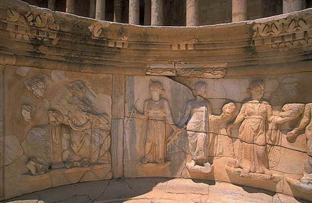

IMG-DA4CCE468FDABC9Bsabratha-roman-museum-001.jpg500×308roman-museum · sabrathano feature · thumbnail_only · unknown
IMG-DD67F5FF23017E29sabratha-roman-museum-002.JPG5280×3956roman-museum · sabrathano feature · high · unknown
IMG-9D9393FC6999022Asabratha-theatre-001.jpg1024×677theatre · sabrathano feature · acceptable · unknown
IMG-BEED310631126A0Esabratha-theatre-004.jpg800×600theatre · sabrathano feature · acceptable · unknown
IMG-52B65502E4686A4Esabratha-theatre-005.jpg1024×677theatre · sabrathano feature · acceptable · unknown
IMG-204859F82D17E1B0sabratha-theatre-006.jpg400×300theatre · sabrathano feature · thumbnail_only · unknown
IMG-222DBF8022824242sabratha-main-site-old-001.jpg640×417صور صبراتة · sabrathano feature · acceptable · unknown
IMG-D1F0A9C97EF7F02Dworld-heritage-LY-WH-000180-01.png254×198LIBYA · heritageno feature · thumbnail_only · unknown
IMG-BEC803D2FC4F411Dworld-heritage-LY-WH-000180-02.png267×189LIBYA · heritageno feature · thumbnail_only · unknown
IMG-8C7E3095E0214460world-heritage-LY-WH-000181-01.png260×194LIBYA · heritageno feature · thumbnail_only · unknown
IMG-2C8E5D4336A34E23world-heritage-LY-WH-000181-02.png720×960LIBYA · heritageno feature · acceptable · unknown
IMG-903FD0540545F4A1world-heritage-LY-WH-000181-03.png960×1290LIBYA · heritageno feature · high · unknown
IMG-D4B8EF2B35F5D7B7world-heritage-LY-WH-000182-01.png479×607LIBYA · heritageno feature · thumbnail_only · unknown
IMG-AD048B2F3F8DE540world-heritage-LY-WH-000182-02.png1920×1080LIBYA · heritageno feature · high · unknown
IMG-EB4A39AF4ABA24BFworld-heritage-LY-WH-000182-03.png2048×1382LIBYA · heritageno feature · high · unknown
IMG-A091075A259BBDA6world-heritage-LY-WH-000183-01.png1825×1152LIBYA · heritageno feature · high · unknown
IMG-31B98A24D5D3076Dworld-heritage-LY-WH-000183-02.png477×596LIBYA · heritageno feature · thumbnail_only · unknown
IMG-12CA9F8469919638world-heritage-LY-WH-000183-03.png500×375LIBYA · heritageno feature · thumbnail_only · unknown
IMG-8267594A245DAFA2world-heritage-LY-WH-000185-01.png182×277LIBYA · heritageno feature · thumbnail_only · unknown
IMG-6A787725FEBC815Aworld-heritage-LY-WH-000186-01.png679×302LIBYA · heritageno feature · acceptable · unknown
IMG-4B98EA0878E2BB90world-heritage-LY-WH-000186-02.png679×507LIBYA · heritageno feature · acceptable · unknown
IMG-12E58A907A032543world-heritage-LY-WH-000186-03.png284×503LIBYA · heritageno feature · thumbnail_only · unknown
IMG-680159BF73FADEC0world-heritage-LY-WH-000187-01.png960×720LIBYA · heritageno feature · acceptable · unknown
IMG-F776061D29DA6F07world-heritage-LY-WH-000187-02.png282×179LIBYA · heritageno feature · thumbnail_only · unknown
IMG-EC02A1DCB0258E56world-heritage-LY-WH-000188-01.png640×480LIBYA · heritageno feature · acceptable · unknown
IMG-74E23D6FCED45CCFworld-heritage-LY-WH-000188-02.png550×412LIBYA · heritageno feature · thumbnail_only · unknown
IMG-8C860FF3B63570C2world-heritage-LY-WH-000188-03.png500×332LIBYA · heritageno feature · thumbnail_only · unknown
IMG-EC9AB80209FEA231world-heritage-039-mymaps-495723519e58.png4000×2250LIBYA · heritageno feature · corrupt · unknown
IMG-7379F868B66284C7world-heritage-LY-WH-000189-02.png2048×1366LIBYA · heritageno feature · high · unknown
IMG-220E43042F3ACFA8world-heritage-LY-WH-000189-03.png2048×1365LIBYA · heritageno feature · high · unknown
IMG-12C2AB020C865E2Eworld-heritage-LY-WH-000190-01.png400×191LIBYA · heritageno feature · thumbnail_only · unknown
IMG-FAB0783EF6630CE0world-heritage-LY-WH-000190-02.png294×288LIBYA · heritageno feature · thumbnail_only · unknown
IMG-2990C5357E2713F7world-heritage-LY-WH-000190-03.png400×314LIBYA · heritageno feature · thumbnail_only · unknown
IMG-455CDEA56101A037world-heritage-LY-WH-000192-01.png194×259LIBYA · heritageno feature · thumbnail_only · unknown
IMG-9D21AB892E6CA33Eworld-heritage-LY-WH-000192-02.png194×259LIBYA · heritageno feature · thumbnail_only · unknown
IMG-152D3DD2E1E1974Bworld-heritage-LY-WH-000198-01.png475×590LIBYA · heritageno feature · thumbnail_only · unknown